A visual career progression: transitioning from scientific principles in the classroom to fast-paced plant floor execution and international readiness.
College of Dairy Science and Food Technology (CGKV). Groundwork in dairy chemistry, plant microbiology, and milk processing engineering.
Turned fermented dairy science into a live customer-facing business. Managed end-to-end recipe formulation, batching, packaging, and commercial street sales.
First major step into large-scale industrial dairy operations. Witnessed high-throughput milk intake, automated processing lines, and CIP cycles.
~2 Years of production & technical responsibility in a dairy processing operation associated with Amul, through BEC Foods.
Achieved telc B1 certification, preparing linguistically and culturally for professional integration into Germany's food processing sector.
Ready to bring academic dairy science, startup problem-solving, and ~2 years of industrial production grit to German dairy and food manufacturing plants.
My journey began with Dairy Technology at the College of Dairy Science and Food Technology, where I developed a deep foundation in milk processing, dairy products, food safety, quality control, hygiene, and production engineering.
Rather than just memorizing formulas, we spent hundreds of hours inside testing labs and pilot plants: studying milk microbiology, analyzing protein/fat equilibria, mastering pasteurization mechanics, and testing whey protein formulation.
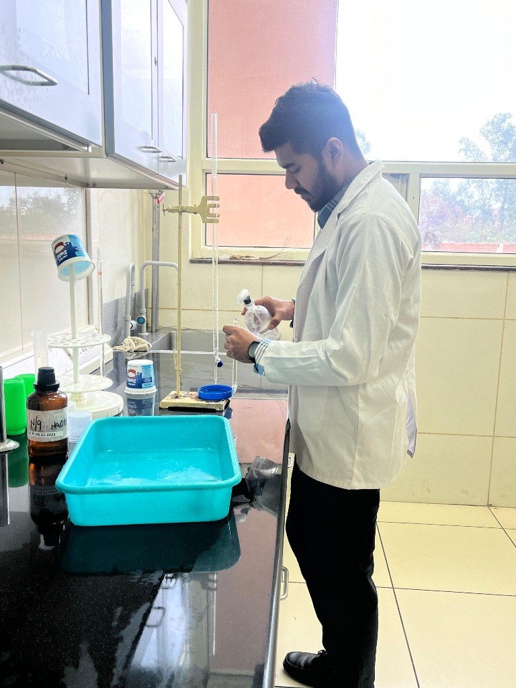
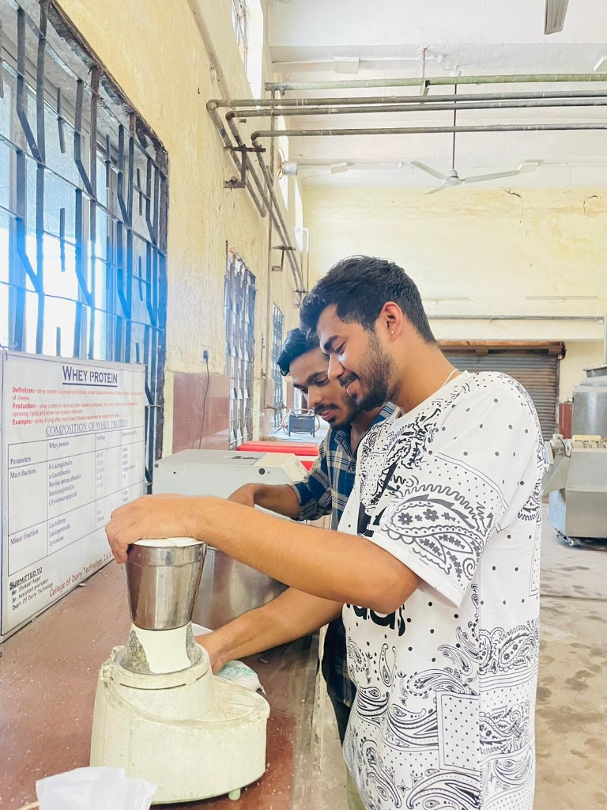
During my B.Tech, I didn't want my dairy knowledge to remain confined to books. I spearheaded a startup-oriented academic venture where we established a commercial Mango Lassi Business from scratch.
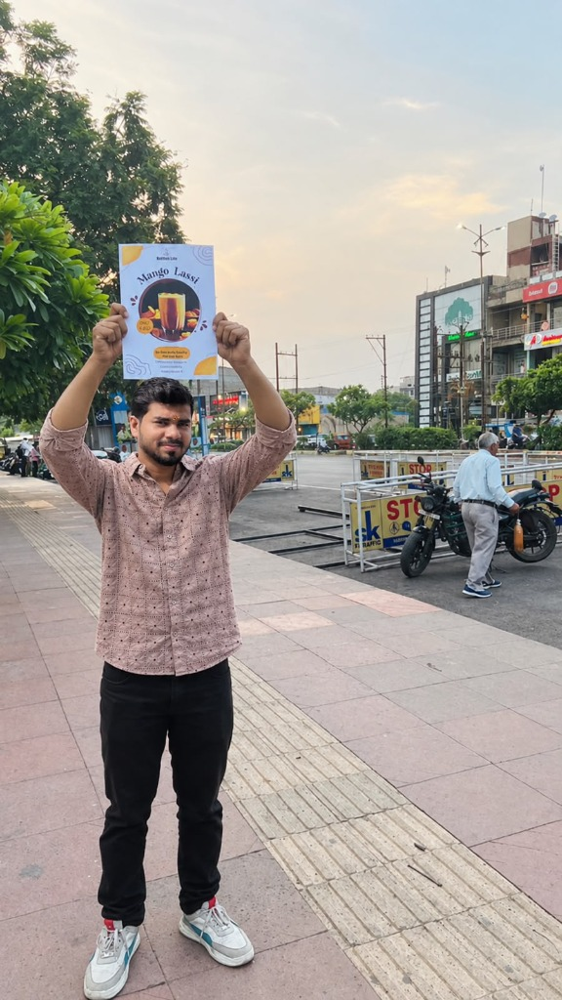
Designing eye-catching promotional flyers and personally engaging local passersby on the street.
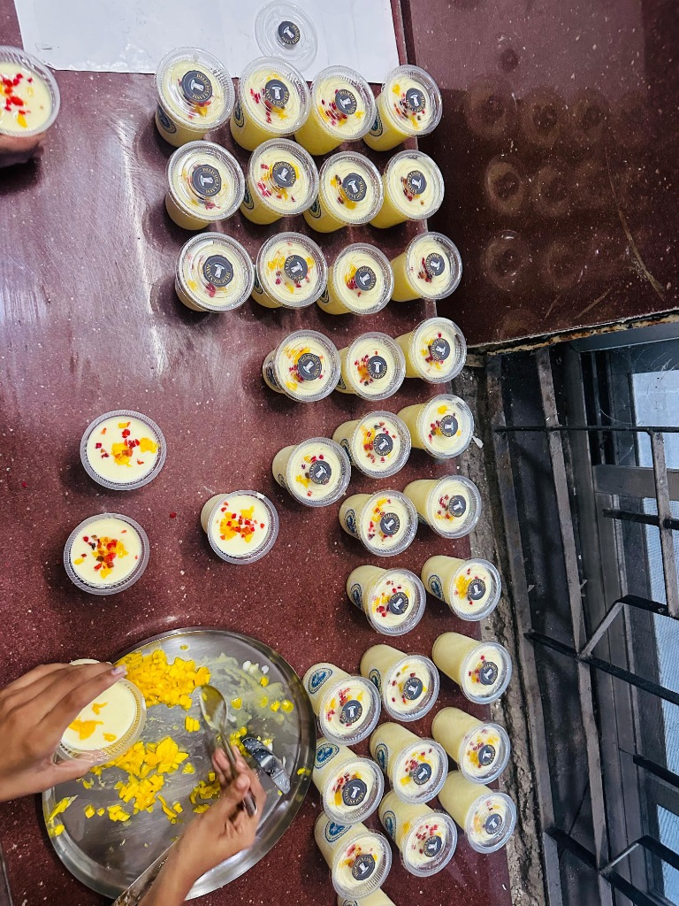
Cutting fresh mango chunks, standardizing curd acidity and sweetness without artificial colors, and individually topping cups.
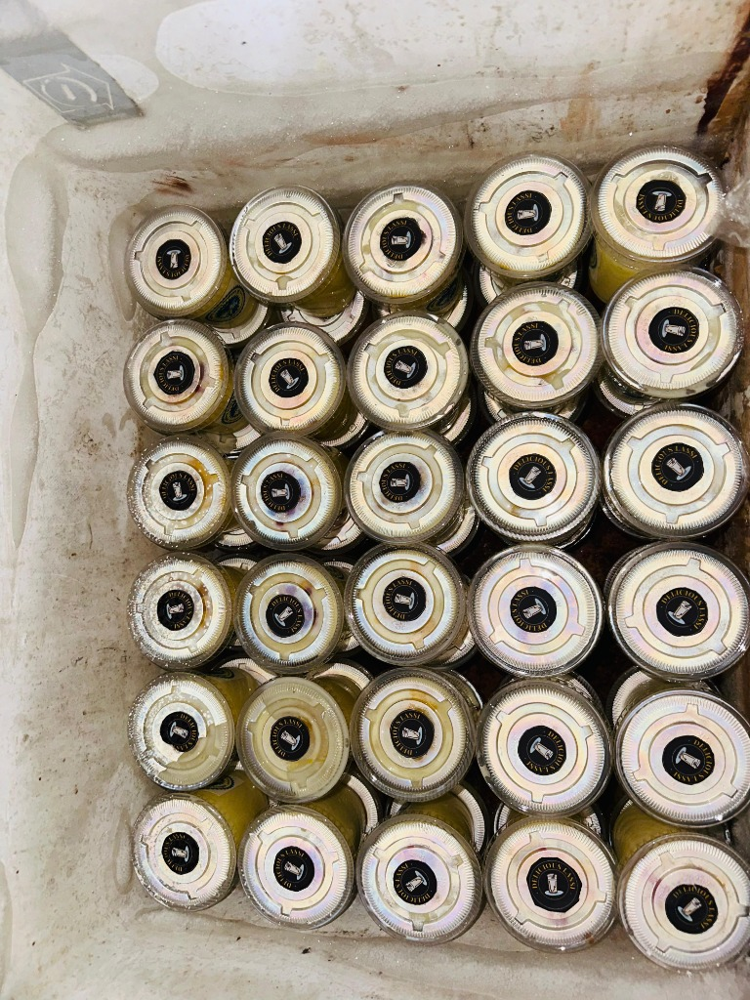
Sealing tamper-evident lids with custom logo stickers and maintaining chill temperatures in heavy-duty cooler chests.
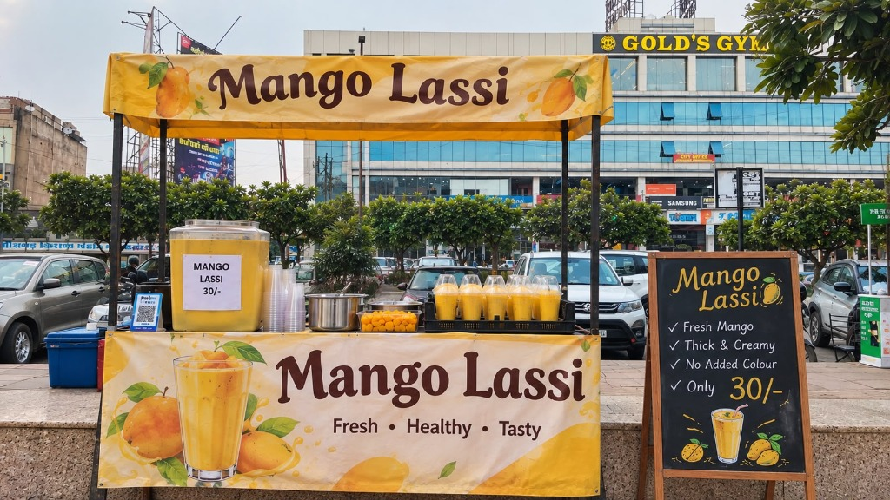
Setting up our branded canopy, temperature-controlled beverage dispenser, and clear ₹30/- value pricing.
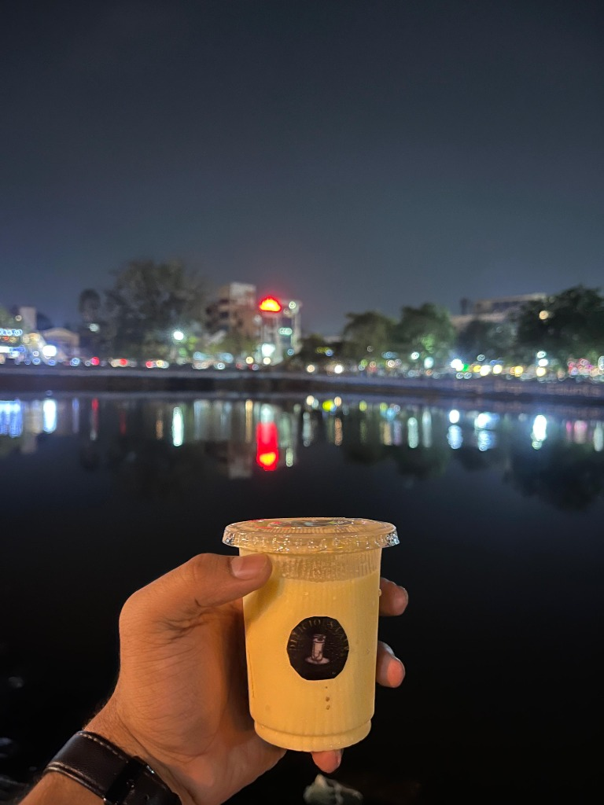
Thick, creamy texture served ice-cold to visitors strolling along the bustling promenade.
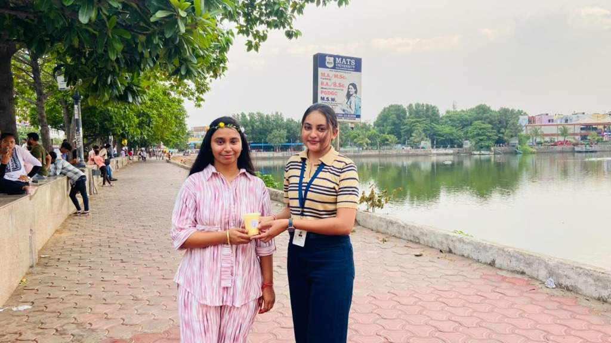
Interacting directly with customers, hearing their spontaneous flavor reactions, and iterating on recipe adjustments.
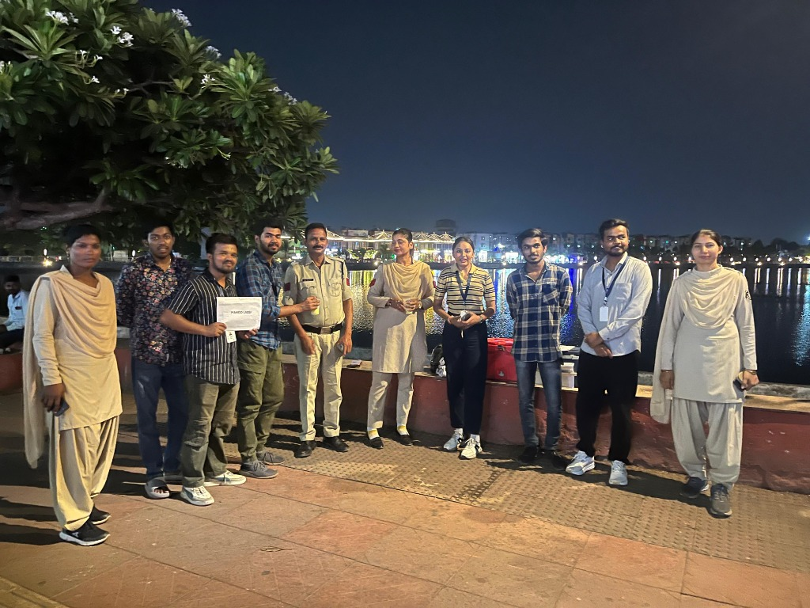
Closing a successful day of sales alongside local officers, peers, and consumers who celebrated our academic startup initiative.
My internship at Verka (Punjab's flagship dairy cooperative) gave me my first close look at how a large-scale dairy organization operates far beyond the textbook.
Standing on the catwalk above towering milk silos, with massive centrifugal separators and continuous pasteurizers humming below, I experienced the rhythm of continuous industrial dairy manufacturing.
High-volume raw milk reception, chilling, clarification, and pasteurization.
Silo inventory balancing, pump transfer sequencing, and piping layouts.
Rapid platform testing, acidity, adulterant screening, and fat standardization.
Clean-In-Place 5-step caustic & acid wash loops ensuring zero contamination.
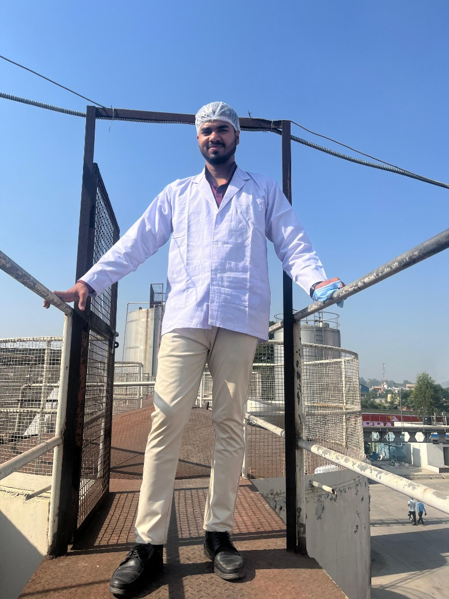
Professional experience in a dairy processing operation associated with Amul, through BEC Foods. Translating standards into daily operational excellence.
Managed technical and operational routines across milk reception, pasteurization, quality verification, and packaging lines. Maintained zero deviation against demanding product specifications and stringent hygiene compliance.
Direct photographic evidence of plant-floor machinery, SCADA screens, and road milk tanker reception:
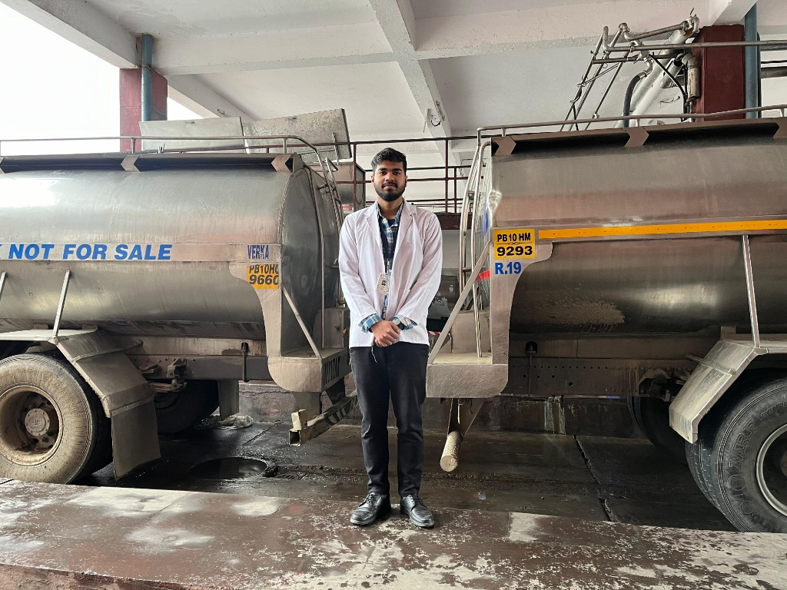
Conducting tanker inspection, dock sampling, temperature logging, and rapid screening before pumping milk into storage silos.
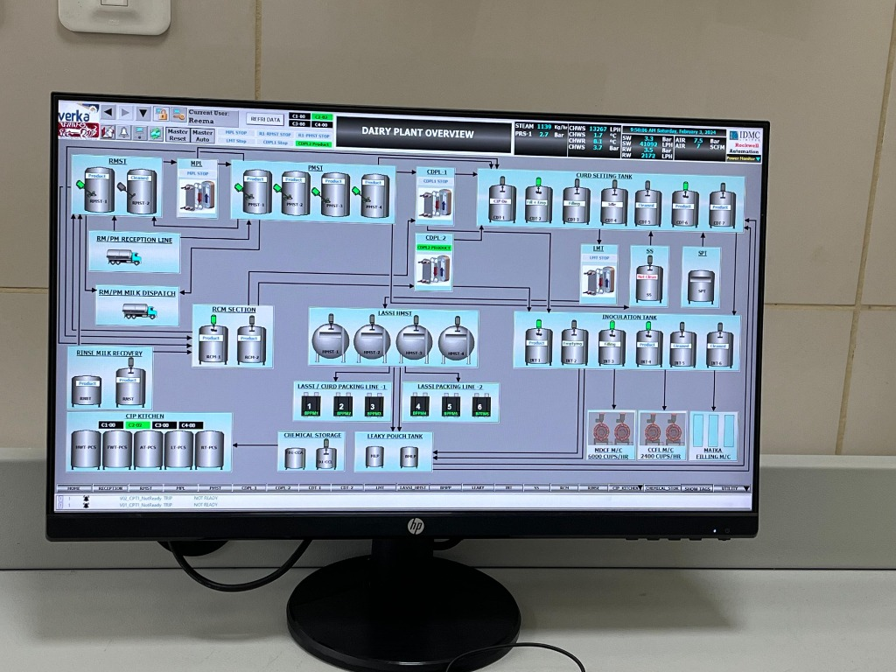
Monitoring automated valves, curd setting tank temperatures, CIP circuit timings, steam pressure, and continuous packaging lines.
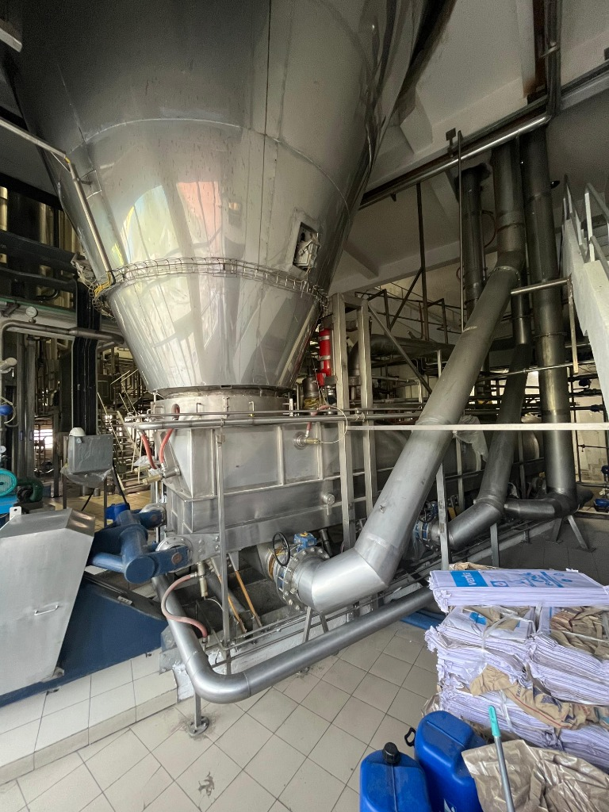
Managing thermal evaporation, spray drying cyclone separation, moisture control, and packaging for dry milk powder batches.
The difference between studying ideal conditions and managing live 24/7 industrial production.
| 🎓 What I Studied in College (Theory) | 🏭 What I Experienced in Industry (Reality) |
|---|---|
| Milk Processing Theory: Textbook thermal death time formulas and simplified batch flowcharts. | Industrial Milk Processing Reality: Multi-thousand-liter continuous pasteurizers, high-pressure homogenizers, and SCADA-driven heat regeneration. |
| Quality Control Theory: Quiet benchtop Gerber fat tests with single test tubes and generous time. | Real Production Quality Reality: Non-stop tanker arrival, urgent Foss spectrometer screening, and split-second decisions before silo intake. |
| Dairy Machinery Theory: Diagrammatic schematics of positive displacement pumps and valves. | Plant Operations Reality: Physical maintenance coordination, seal inspections, line pressure drops, and rapid shift troubleshooting. |
| Hygiene & Sanitation Theory: Standard principles of detergent concentration and clean contact surfaces. | Practical Implementation Reality: Timed automated CIP/SIP chemical sequencing, conductivity probe monitoring, and strict microbiological swab audits. |
How dairy processing should work
How plant floors actually work
Pragmatic industrial competence
"Theory taught me how dairy processing should work.
Industry taught me how it actually works.
My experience helped me understand the difference between academic concepts and real production environments — including time constraints, teamwork, quality requirements, hygiene, equipment and operational challenges."
"Moving to Germany is not simply about finding a job. I wanted to prepare myself for the environment I hope to work in. Learning German has been an essential part of that preparation, and completing my B1 examination is one of the milestones in this journey."
A purposeful, long-term commitment to professional excellence, safety culture, and international contribution.
Germany is a global benchmark for precision food technology, advanced sanitary automation, and rigorous consumer standards. I want to build my technical expertise in this world-class manufacturing ecosystem.
I am deeply drawn to an environment where structure, punctuality, and accountability are matched by mutual respect and healthy work-life balance — allowing professionals to sustain high standards sustainably.
I want to step outside my comfort zone, contribute my Indian dairy experience, learn from German engineering traditions, and collaborate effectively with multinational production crews.
I am actively seeking opportunities in Germany where I can combine my academic degree in Dairy Technology with my practical experience in milk processing, quality assurance, and production operations.
Demonstrated technical strengths, professional attributes, and multilingual capabilities built across academic labs and industrial production floors.
A complete photographic archive across academic labs, startup execution, and large-scale industrial dairy manufacturing.
I started with dairy technology in the classroom.
I experimented with entrepreneurship through my mango lassi project.
I entered the industry through my internship at Verka.
I gained practical experience in dairy processing and production.
I learned German and completed my B1 certification.
Now, I'm ready for my next professional challenge in Germany.